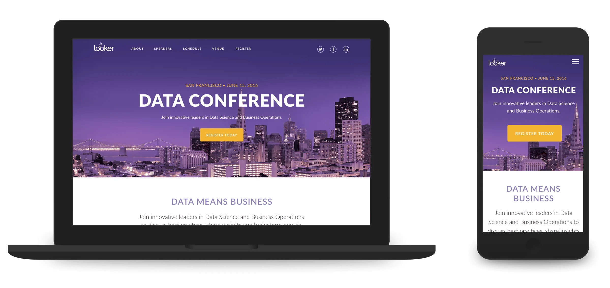
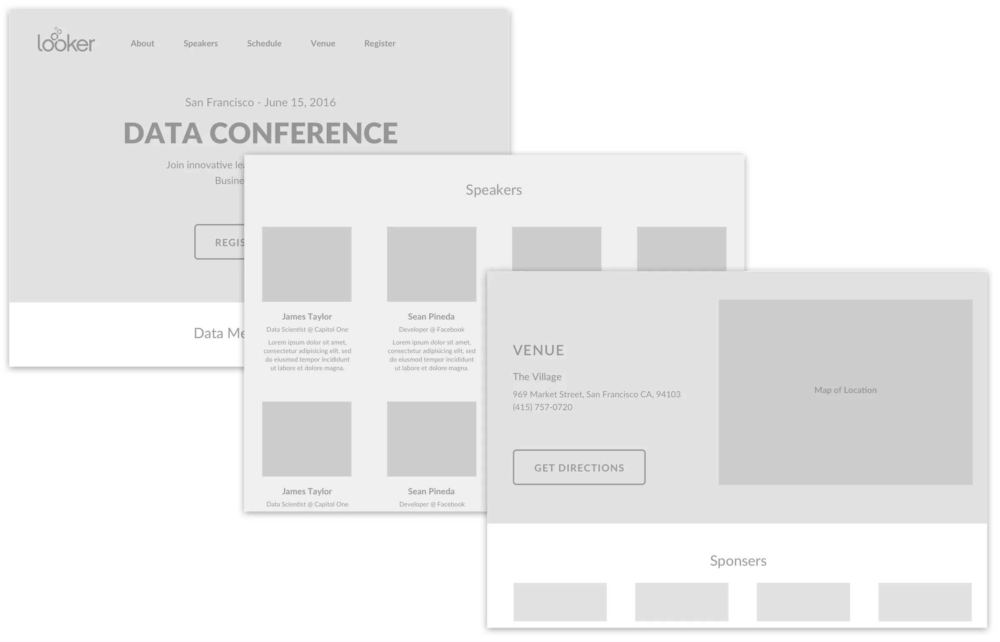
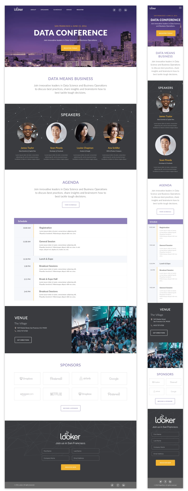
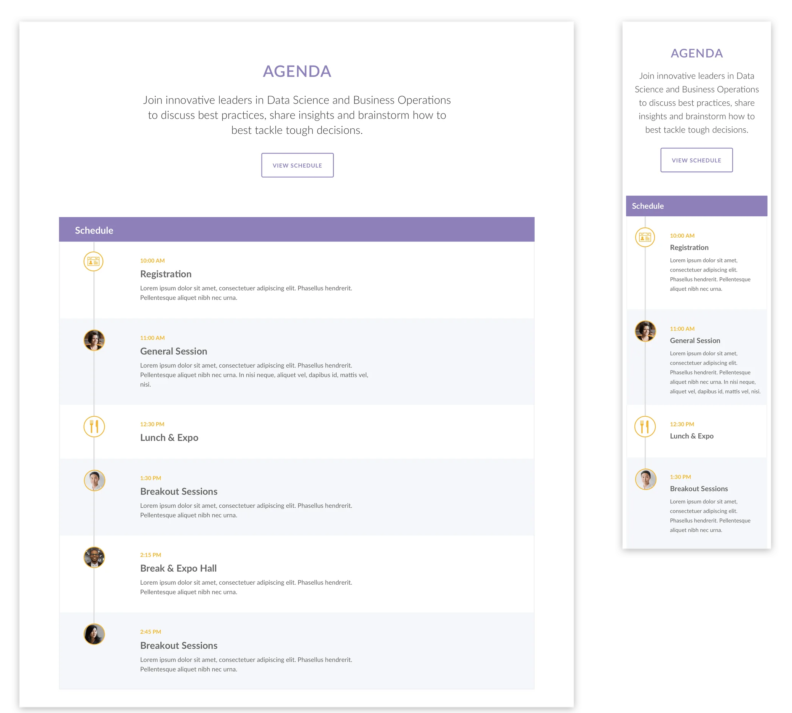
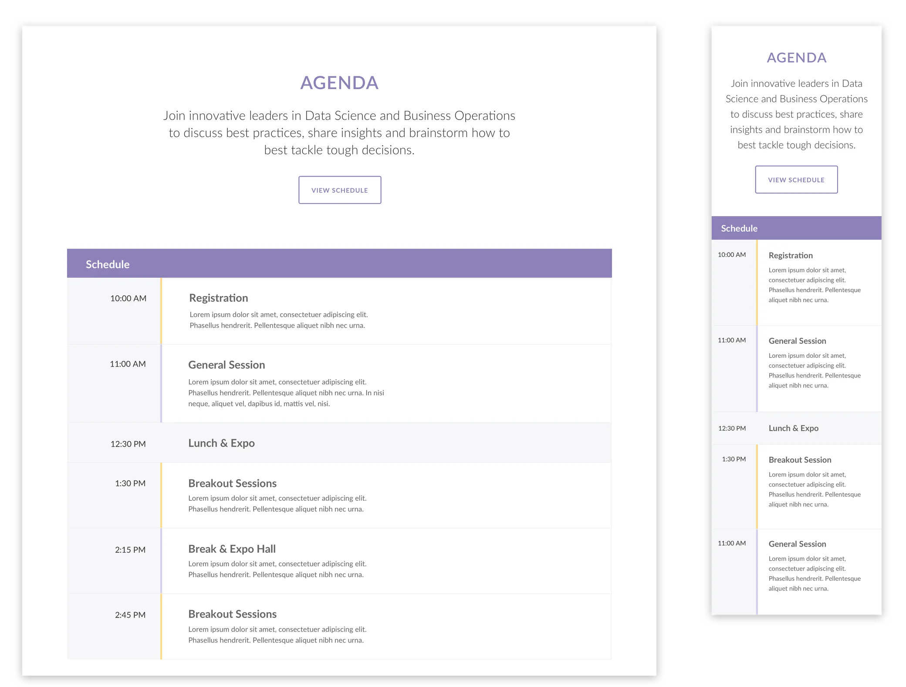
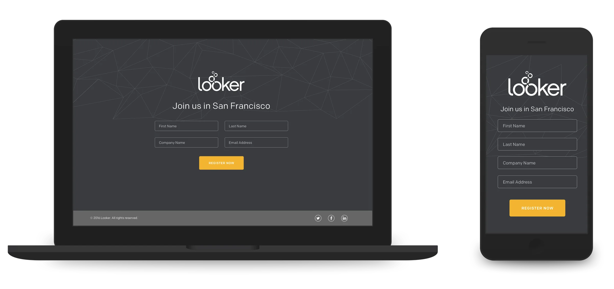

Challenge
Fit speakers, schedule, venue, sponsors and registration on one page without losing people before they sign up.
Looker, a data analytics company, needed a responsive landing page for its workshops and conferences. I designed a single page that holds every detail of an event, makes signing up easy, and can be reused for the next one.

Fit speakers, schedule, venue, sponsors and registration on one page without losing people before they sign up.
Anchor-link navigation, a sign-up button above the fold, and modular sections the content team can fill per event.
A responsive template with two schedule layouts, built to be repurposed across Looker’s events.
Wireframes & Planning
I started with Looker’s marketing team to agree on goals and take a content inventory. Grayscale wireframes then let the content team check flow and hierarchy before any visual design. Because the page would be reused for many events, every section had to work with more or less content than the first one.

Desktop to Mobile
Once the wireframes were approved, I designed the page responsively. The main navigation needed to stay simple, so each menu item is an anchor link that scrolls straight to its section: About, Speakers, Schedule, Venue and Register.
The sections alternate between white and a charcoal network pattern, so each part of the event reads as its own block as you scroll, on a laptop or a phone.

Schedules
The marketing team asked for two schedule designs. One puts a speaker photo or an icon beside each time slot, for events where those were ready. The other is a text-only version for events where they weren’t yet.


Sign-Up Form
The Register Today button above the fold jumps visitors down to the sign-up form at the bottom. That makes the hero and the form work as bookends around the event details: the invitation at the top, the commitment at the end.

Up Next